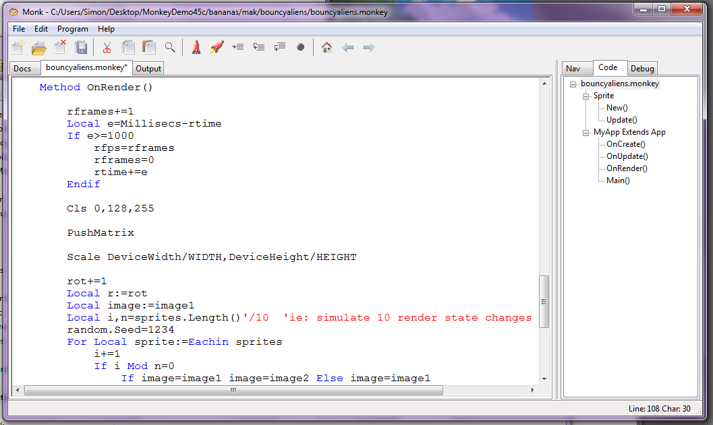

Monk
Monk is a free code editor by Skid for monkey that works on both Windows and Apple computers.
Follow the Monkey Demo Guide for instructions on installing the free monkey demo which has everything you need to start coding with monkey.
The current version of Monk is 0.37 which adds Monkey function highlight and integrated Help with this Wiki.
Features
Monk can archive every version of source saved in it's history folder.
Monk has an optional set of key bindings. Select Use OS Specific Shortcut Keys in File->IDE Options if you prefer more traditional keyboard bindings.
The Escape key in Monk can be used to quickly return to the code editor from either the Output or Help tabs.
Source code
Monk is written in BlitzMax and is based on a recent fork of MaxIDE.
The source code is public domain and can be found in the %monkey%/src folder.
Windows users that find Monk too simple have an alternative option named Jungle.